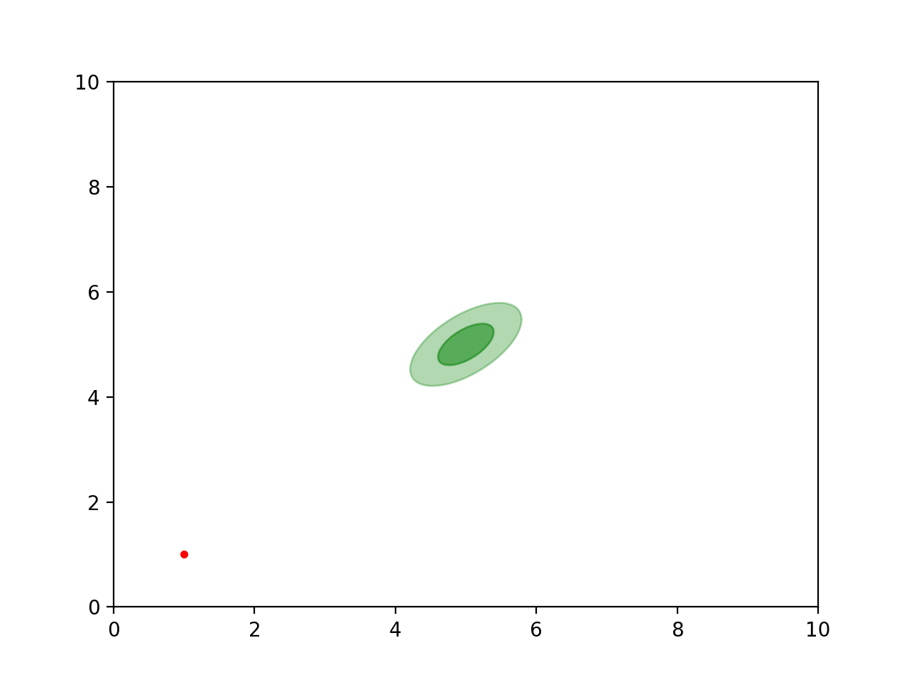

Samplers
Science is all about making educated guess about how nature works and verifying the validity of the guess by making empirical measurements from the real world. The later part of this process is the one that distinguishes science from other disciplines. It renders a certain degree of honesty to the whole process.
However, models cannot make predictions right out of the box. All models are mere approximations, valid only within a certain domain of physical reality. An approximation requires introducing parameters which account for effects from other domains of physical reality. These parameters have to be supplied to the model to make any meaningful predictions. In practice these parameters are estimated from available data. Higher the uncertainty in estimating model parameters, weaker are the predictions of the model. It is therefore important to have precise esitmates of model parameters. The problem then reduces to,
how to infer the parameters of a theoretical model from a dataset?
The framework to answer these questions was provided around 200 years ago by in probabilty theory by Bayes in the form of a theorem which goes by his name, the Bayes theorem:
\[P(\theta | \mathcal{D},\mathcal{M}) = \frac{Likelihood*Prior}{Evidence} \ . \]
For models with multiple parameters, the numerator is an integral over the entire parameter space, \[Posterior = \int d\theta \ P(\mathcal{D} | \theta, \mathcal{M}) \ P(\theta) \]
The integral is quite expensive to evaluate with brute force finite element methods since the likelihood is usually expensive to evaluate numerically. It is necessary to device smart methods which can give these integrals with the least number of likelihood evaluations. Exploring these smart techniques is the central theme of this post.
The Metropolis Algorithm
The Metropolis algorithm is one of the most simple and oldest Markov Chain Monte Carlo (MCMC) algorithm. Although quite obscure until mid 1900s, the rise of computers allowed boring repetitive tasks to be performed by a machine instead of graduate students. The first known instance of such an implementation was pioneered by von Neumann to solve the neutron diffusion problem (see this). The algorithm by itself is very simple.
The sampler is aimed at solving the following problem: to draw samples from a probability distribution function (PDF) such that the drawn set of samples is a representative of the PDF. We would like to achieve this task by drawing minimum number of samples from the distribution. The Metropolis algorithm works with two simple rules:
- If new point has higher likelihood, definitely upgrage.
- If new point has lower likelihood, upgrade with probability \( P(upgrade) = \frac{\mathcal{L}_{new}}{\mathcal{L}_{old}} \)
How does that look in practice?

Diversion - CosmoMC
Why look for anything else?
The sampler almost definitely fails in 3 cases:
- Multimodality
- Curving degeneracies eg. Rosenbrock function
- Peaked maxima